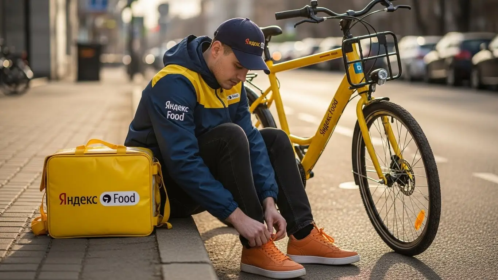
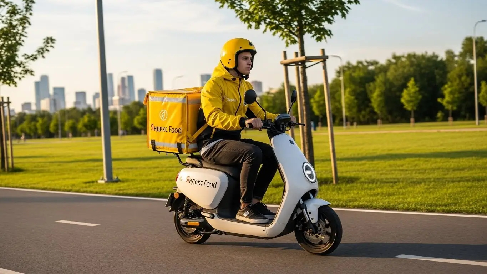

Доход курьера Яндекс Еда в Нижнем Новгороде 2025-2026: разбор

- Работа курьером Яндекс Еды в Нижнем Новгороде: для кого эта вакансия и что вы получите
- Сколько вы будете зарабатывать курьером в Нижнем Новгороде: калькулятор дохода и разбор выплат
- Реальный заработок курьера в Нижнем Новгороде: смены и месячный доход
- График работы и форматы занятости
- Требования к кандидату и документы
- Самозанятость, налоги и юридическая чистота
- Пошаговое оформление и первый выход на линию в Нижнем Новгороде
- Пешком, на вело или на авто: что выгоднее в Нижнем Новгороде
- Районы, маршруты и «топовые» зоны заказов в Нижнем Новгороде
- Безопасность, страховка, штрафы и оплата простоя
- Плюсы и возможные минусы работы курьером в Нижнем Новгороде
- Реальные истории и отзывы курьеров из Нижнего Новгорода
- Ответы на главные вопросы о работе курьером Яндекс Еды в Нижнем Новгороде
- Короткие ответы на главные вопросы
- Итоги и ваш следующий шаг
Все города
Думаешь, работа курьером в Нижнем — это просто врубил приложение и поехал грести деньги? А как насчёт пробок на Гагарина, ледяных горок в Нагорной части зимой или поиска нужного подъезда в муравейниках Сормово? Многие новички видят только рекламу о доходе в 5–6 тысяч в день, но забывают про «убитую» подвеску, штрафы и заказы по 100 рублей, ради которых надо пересечь полгорода. Давай начистоту: я расскажу, как на самом деле устроена работа курьером Яндекс Еда в Нижнем Новгороде, а не в вакууме.
Поверь, без понимания местной «кухни» ты либо бросишь это дело через месяц, либо будешь работать за копейки, проклиная всё на свете. Твой реальный заработок — это не просто цифра в приложении. Из неё нужно вычесть налог самозанятого, бензин или ремонт велика, а потом ещё и понять, почему в Автозаводском районе заказов валом, а в центре — пусто, хотя коэффициенты горят. Чтобы заранее оценить все нюансы, изучи подробные условия и требования — вся актуальная информация про работу курьером Яндекс Еда в Нижнем Новгороде собрана на официальной странице, там же есть калькулятор дохода и форма для быстрой заявки.
В этом гиде мы по косточкам разберём всё: сколько реально можно заработать пешком, на велосипеде и на авто в 2025–2026 годах; посчитаем чистый доход с учётом всех расходов; я покажу на карте самые «хлебные» и «гиблые» районы Нижнего; выясним, как погода и пробки на мостах влияют на заработок и как это использовать; и, конечно, расскажу, как не нарваться на штрафы и что делать, если поддержка молчит.
Меня зовут Алексей. Я сам откатал не одну тысячу километров с жёлтым рюкзаком по Нижнему, а сейчас у меня свой небольшой таксопарк-партнёр. Я видел эту систему со всех сторон — и как курьер на линии, и как тот, кто помогает ребятам выходить на смену. Так что никакой рекламной шелухи и обещаний золотых гор не будет. Только мясо, только реальный опыт и советы, которые сэкономят тебе кучу нервов и денег. В общем, пристегивайся. Сейчас всё разложу по полочкам.
Чтобы ты не заблудился во всех этих деталях, вот короткий навигатор по статье.
Что ты точно узнаешь из этого гида по Нижнему
В этой статье ты ТОЧНО узнаешь:
- Сколько реально заработать за смену в Нижнем Новгороде пешком, на вело и на авто, и как погода влияет на доход?
- Какие районы и зоны в Нижнем самые «хлебные» (Автозавод, центр, Печёры), а куда лучше не соваться в час пик?
- Что выгоднее в Нижнем с его пробками и холмами: машина, велосипед или свои двое?
- Как за 10 минут оформить самозанятость и почему это выгоднее, чем работать неофициально?
- За что на самом деле снижают рейтинг, как это влияет на количество заказов и можно ли этого избежать?
- Что такое «оплата простоя» и как она защищает твой заработок, если заказов вдруг стало мало?
А если тебе некогда читать всю статью — переходи сразу к заключению, где ты найдёшь короткие ответы на все эти вопросы и указания, в каких разделах искать подробности.
А вот основные цифры и факты о работе в Нижнем в одной картинке.
Работа курьером в Нижнем Новгороде: ключевые цифры
Работа курьером Яндекс Еды в Нижнем Новгороде: для кого эта вакансия и что вы получите
Кому подойдёт эта работа в Нижнем Новгороде
Давай начистоту: эта работа не для всех, но для многих — настоящая находка. В первую очередь, это идеальный вариант для студентов. Пары закончились — можно выйти на пару часов в центре, заработать на свои расходы и не просить у родителей. Свободный график легко подстроить под себя, так что проблем с сессией не будет.
Эта вакансия — отличная подработка и для тех, у кого уже есть основная работа. Если нужны деньги на кредит, отпуск или финансовую подушку, можно выходить на доставки по вечерам или в выходные. Никаких начальников над душой: ты сам решаешь, когда и сколько работать. И конечно, это хороший старт для людей без опыта. Не нужно дипломов и стажировок — только смартфон, желание двигаться и аккуратность.
Главные преимущества для жителей районов Автозаводский, Советский, Нижегородский
Главный плюс работы курьером в Нижнем — возможность развозить заказы прямо у себя под окнами. Живёшь ты, например, в Автозаводском районе — не придётся ехать через весь город на проспект Гагарина или в Верхние Печёры, чтобы начать смену. Достаточно включить приложение «Яндекс Про», и вот ты уже выполняешь доставки из местных кафе и магазинов.
То же самое касается жителей Советского или Нижегородского районов. Везде есть свои точки притяжения: торговые центры, фуд-корты, целые улицы с ресторанами. Это значит, что заказы есть всегда. Ты экономишь время и деньги на дорогу, потому что твоё рабочее место — это твой район. Ведь ты отлично его знаешь, ориентируешься без навигатора и можешь быстро срезать через дворы.
Краткое обещание по доходу и условиям
Если говорить о деньгах, то доход в Нижнем Новгороде вполне достойный. Активный курьер за смену в 8–10 часов может заработать 3000–4500 рублей. Если нужна просто подработка на 3–4 часа в день, рассчитывай на 1500–2000 рублей. В месяц при полной занятости реально выходить на 70 000 – 90 000 рублей, особенно если ты на своём авто и берёшь выгодные слоты.
Ключевые условия работы просты и прозрачны. Во-первых, есть ежедневные выплаты — деньги приходят на карту, не нужно ждать зарплаты месяц. Во-вторых, у тебя свободный график, который ты планируешь сам через приложение. В-третьих, для старта не требуется опыт работы или специальное образование. Основные требования: возраст от 18 лет, смартфон на Android и статус самозанятого.
Сколько вы будете зарабатывать курьером в Нижнем Новгороде: калькулятор дохода и разбор выплат
Из чего складывается доход курьера
Итоговый заработок курьера — это не просто фиксированная ставка. Он складывается из нескольких частей, и важно понимать каждую, чтобы влиять на свой доход.
Во-первых, это оплата за заказ — базовая сумма за доставку. Во-вторых, доплата за расстояние — чем дальше ехать или идти, тем больше денег. В-третьих, самое интересное — повышающие коэффициенты. В часы пик, плохую погоду или в районах с высоким спросом (на карте они подсвечиваются фиолетовым) стоимость заказа умножается на коэффициент. Именно на них можно заработать больше всего.
Кроме того, есть персональные бонусы (например, «выполни 15 заказов за день и получи +1000 рублей») и чаевые от клиентов, которые полностью достаются тебе. Также твой доход защищают оплата простоя, если ты вышел на плановый слот, а заказов мало, и возможная компенсация проезда на общественном транспорте при доставке в отдалённые районы.
Как пользоваться калькулятором дохода
На этой странице есть специальный калькулятор — это не просто игрушка, а полезный инструмент для планирования. Пользоваться им элементарно. Сначала выбери свой тип доставки: пеший курьер, курьер на велосипеде или на личном автомобиле. От этого сильно зависит скорость и, соответственно, потенциальный заработок.
Затем укажи, сколько часов в день и сколько дней в неделю ты планируешь выходить на смены. Старайся указывать реалистичные цифры. На выходе калькулятор покажет примерный диапазон твоего дохода за день и за месяц. Эти цифры основаны на средней статистике по Нижнему Новгороду и помогут понять, на что можно рассчитывать.
Калькулятор дохода курьера в Нижнем Новгороде
Примерный доход в месяц
Расчёт основан на средней ставке и не учитывает бонусы, чаевые и повышенные коэффициенты. Ваш реальный доход может отличаться.
Примеры расчёта для пешего, вело- и авто‑курьера в Нижнем Новгороде
Чтобы было понятнее, давай разберём три реальных сценария.
- Пеший курьер (студент). Парень работает после учёбы по 4 часа в день, 5 дней в неделю. Выбирает для работы центр — Нижегородский район, улицы Большая Покровская и Рождественская, где много кафе. Заказы короткие, но их хватает. В среднем за такую смену он зарабатывает 1600–2200 рублей. В месяц выходит около 35 000–45 000 рублей — отличная прибавка к стипендии.
- Курьер на велосипеде (велокурьер). Девушка работает по 6–8 часов в выходные и пару раз по будням вечером, доставляя заказы между Советским и Приокским районами. На велосипеде она быстрее пешего курьера, покрывает большие расстояния и легко объезжает пробки на проспекте Гагарина. Её дневной доход в выходной день — 2800–3500 рублей. В месяц набегает 50 000–60 000 рублей.
- Курьер на своем авто (водитель-курьер). Мужчина работает на личном автомобиле по 8–10 часов в день. Он берёт заказы по всему городу, включая дальние доставки в Автозаводский район или даже в пригороды вроде Кстово. В плохую погоду, когда пешие и велокурьеры не так активны, у него максимальная загрузка и высокие коэффициенты. Его заработок за смену может достигать 4500–6000 рублей, а месячный доход — 90 000 рублей и выше, уже за вычетом расходов на бензин.
Эти примеры — ориентир. Чтобы прикинуть цифры точнее и посмотреть актуальные условия для Нижнего, загляни на страницу трудоустройства. Там есть и калькулятор, и форма заявки: работа курьером Яндекс Еда в твоём городе.
Реальный заработок курьера в Нижнем Новгороде: смены и месячный доход
Давай сразу к главному — к деньгам. Забудь про обещания «до 200 тысяч в месяц», которые видишь в рекламе. Такие суммы возможны, но это удел единиц, которые работают на машине по 12–14 часов без выходных в самый пик сезона. Я расскажу, сколько реально можно заработать в Нижнем Новгороде, если подходить к делу с умом, а не жить в машине. Твой доход — это результат твоей активности, стратегии и умения ловить момент.
Цифры, которые я назову, — это средние показатели по городу для добросовестного курьера, который уже освоился и понимает, как работает система. В первый месяц может быть чуть меньше, пока набиваешь руку. Но если будешь следовать советам, быстро выйдешь на стабильный уровень. Главное помнить: твой заработок напрямую зависит от количества выполненных заказов в Яндекс Еде и Доставке, а их число — от твоего подхода к работе.
Диапазон дохода для подработки и полной занятости
Если ты ищешь подработку на несколько часов в день, чтобы закрыть кредит или накопить на что-то, цифры будут одни. Если же это твоя основная работа — совсем другие.
Подработка (2–4 часа в день, 3–5 дней в неделю):
- Пеший или велокурьер: За короткую смену в 3–4 часа в удачный день можно сделать 1000–1500 рублей. В среднем за месяц выходит 20 000 – 35 000 рублей. Идеально для студентов или тех, кто хочет совмещать с основной работой.
- Курьер на авто: За те же 3–4 часа заработок будет выше за счёт скорости и возможности брать дальние заказы — примерно 1500–2500 рублей. В месяц такая подработка может принести 30 000 – 50 000 рублей. Но не забывай вычитать расходы на бензин.
Полная занятость (8–10 часов в день, 5–6 дней в неделю):
- Пеший или велокурьер: Работая полный день, можно стабильно зарабатывать 3000–4500 рублей за смену. В месяц это выливается в 60 000 – 90 000 рублей. Физически это непросто, но вполне реально.
- Курьер на авто: Здесь доход самый высокий. За полный рабочий день выходит 4000–7000 рублей. В месяц опытные водители-курьеры в Нижнем Новгороде делают 80 000 – 130 000 рублей «грязными». После вычета топлива и амортизации чистыми остаётся солидная сумма.
Как район, время суток и погода влияют на доход
Твой заработок — это не просто плата за доставку. Он постоянно меняется в зависимости от трёх ключевых факторов: где, когда и в какую погоду ты работаешь. Понимание этих моментов — прямой путь к увеличению дохода без лишних усилий.
Главный инструмент здесь — повышающие коэффициенты, которые ты видишь в приложении «Яндекс Про». Карта города окрашивается в разные цвета: чем ярче зона, тем выше спрос и, соответственно, оплата за каждый заказ. В Нижнем Новгороде самые «жирные» зоны — это, как правило, центр (Нижегородский район, улицы Большая Покровская, Рождественская), а также крупные спальные районы в часы пик (Автозаводский, Сормовский, Верхние Печёры). В обед (с 12:00 до 15:00) заказы летят из бизнес-центров, а вечером (с 18:00 до 22:00) и в выходные — из ресторанов в жилые кварталы, в основном по линии Яндекс Еды.
Отдельная история — погода. Сильный дождь, снегопад или, наоборот, аномальная жара — твой лучший друг. Люди не хотят выходить из дома, спрос на доставку взлетает до небес, а вместе с ним и коэффициенты. В такие дни можно за 4–5 часов заработать как за обычную 8-часовую смену. К тому же, в плохую погоду клиенты чаще оставляют щедрые чаевые — ценят, что ты избавил их от необходимости мокнуть под дождём.
Советы по увеличению заработка от опытных курьеров
Просто выйти на линию и ждать заказов — стратегия для новичков. Чтобы зарабатывать больше, нужно думать как предприниматель. Вот несколько проверенных советов от меня и моих ребят.
Во-первых, планируй свои смены. Заранее бронируй плановые слоты в приложении на самое выгодное время — вечер пятницы, выходные дни, обеденные часы. Эти слоты разбирают быстро. Во-вторых, не гоняйся за «фиолетовыми» зонами через весь город. Выбери 1–2 района, которые хорошо знаешь, где много кафе и плотная жилая застройка (например, район ТРЦ «Фантастика» или «Седьмое небо»), и работай там. Ты сэкономишь время и бензин на пустых перегонах и будешь быстрее выполнять заказы.
И наконец, будь гибким. Если у тебя есть и велосипед, и машина, используй их по ситуации. Для центра Нижнего с его пробками и узкими улочками идеально подходит велосипед. А когда нужно развозить заказы по разным концам Автозавода или в плохую погоду — садись за руль. Умение сочетать разные виды доставки позволяет всегда оставаться в выигрыше.
Вот реальный кейс. Парень-студент, работает на велосипеде в верхней части города. Сначала катался хаотично, зарабатывал по 800–1000 рублей за вечер. Потом стал брать слоты строго с 19:00 до 23:00 в районе площади Горького и улицы Белинского. В первый же сильный дождь он вышел на линию и за 4 часа сделал 2800 рублей. Просто потому, что был там, где нужно, и в то время, когда нужно.
В общем, твой заработок курьером в Нижнем Новгороде — это не лотерея, а система. Изучай карту спроса, лови пиковые часы и плохую погоду, не бойся экспериментировать с районами. Главный совет: относись к этому как к своему небольшому бизнесу, и тогда доход будет только расти.

График работы и форматы занятости
Одно из главных преимуществ работы курьером — это свободный график. Ты сам себе начальник и сам решаешь, когда и сколько работать. Никаких планов с 9 до 6, никаких начальников, стоящих над душой. Эта гибкость позволяет вписать доставку в любой образ жизни, будь ты студент, работник на пятидневке или человек, который просто не любит офисную рутину.
Приложение «Яндекс Про» — твой главный инструмент планирования. Через него ты выбираешь свободные или плановые слоты, видишь зоны повышенного спроса и контролируешь свой доход. Хочешь — работай каждый день по 10 часов, хочешь — выходи на пару часов в субботу, чтобы заработать на поход в кино. Никто не будет тебя заставлять или упрекать за «прогулы».
Подработка после учёбы или основной работы
Совмещать доставку с чем-то ещё — самый популярный сценарий. Это отличный способ получить дополнительный доход, не меняя кардинально свою жизнь. Вот пара реальных примеров из Нижнего Новгорода.
Пример первый: студент НГТУ им. Алексеева. Живёт в общежитии на проспекте Гагарина. После пар, примерно с 18:00, он садится на велосипед и берёт заказы в Советском и Нижегородском районах. Работает 3–4 часа, выполняя доставки заказов Яндекс Еды из кафе и ресторанов. В неделю у него выходит 4–5 таких смен. Это приносит ему около 25 000–30 000 рублей в месяц, которых с лихвой хватает на личные расходы.
Пример второй: офисный сотрудник, работает 5/2 в центре города. Чтобы быстрее закрыть ипотеку, он после работы выходит на линию на своей машине. С 18:30 до 21:30 он выполняет 5–7 заказов, в основном в верхней части города. В выходные может взять один полный слот на 6–8 часов. Такая подработка добавляет к его основной зарплате 35 000–40 000 рублей ежемесячно. Он говорит, что это не только деньги, но и способ «проветрить голову» после сидячей работы.
Полная занятость: как выглядит типичный день курьера
Если ты решил сделать доставку своей основной работой, твой день будет строиться вокруг пиков спроса. Это уже не хаотичные выходы, а полноценная рабочая смена, которую нужно планировать.
Типичный день автокурьера в Нижнем Новгороде выглядит примерно так. Он выходит на линию около 11:00, начиная с районов, где много офисов, например, с центра или района площади Лядова. С 12:00 до 15:00 — самый пик обеденных заказов, работа идёт без остановок. После 15:00 наступает затишье. Это время можно использовать для обеда, заправки или просто небольшого отдыха.
Ближе к 18:00 спрос снова начинает расти. Теперь основной поток заказов идёт из ресторанов в спальные районы — Автозавод, Сормово, Мещера. Вечерний пик длится до 21:00–22:00. После этого можно либо закончить смену, либо остаться на линии для выполнения ночных заказов из круглосуточных магазинов, если есть силы. За такой день, с учётом перерывов, курьер находится на линии 8–10 часов и выполняет 20–30 заказов.
Как планировать слоты и выходы через приложение «Яндекс Про»
«Яндекс Про» — это твой командный центр. От того, как ты с ним работаешь, зависит стабильность твоего дохода. Основной инструмент — это расписание слотов. Слоты бывают свободные (вышел на линию, когда захотел) и плановые (забронировал заранее на определённое время и в определённом районе).
Плановые слоты выгоднее — по ним часто бывают дополнительные бонусы и гарантированный доход в час, даже если заказов мало. Но они требуют дисциплины. Если ты забронировал слот с 18:00 до 22:00 в Канавинском районе, ты должен ровно в 18:00 быть в этой зоне и готовым принимать заказы. Опоздания или пропуск слота негативно влияют на твой рейтинг.
Высокий рейтинг — это ключ к хорошему заработку. Он даёт тебе преимущество при распределении заказов. Чтобы его поддерживать, нужно вовремя выходить на забронированные слоты, не отказываться от заказов без веской причины и получать хорошие оценки от клиентов. Поэтому мой совет: бронируй слоты заранее, особенно на вечер и выходные, и всегда будь пунктуален. Это основа стабильного и высокого дохода.
Вот ещё один кейс. Водитель-курьер поначалу работал на свободных слотах, катался по всему городу и жаловался на большой расход бензина. Потом я ему посоветовал перейти на плановые. Он стал заранее бронировать утренние слоты в Сормовском районе, где живёт, а вечерние — в центре. В итоге его холостой пробег сократился почти вдвое, а чистый доход вырос процентов на 20, потому что он всегда оказывался в зоне высокого спроса в нужное время.
В итоге, гибкий график в работе курьером — это не анархия, а умное планирование. Используй «Яндекс Про» на полную: анализируй карту спроса, бронируй выгодные слоты и относись к своему рейтингу серьёзно. Это и есть главный секрет, как превратить свободный график в стабильный источник дохода.
Требования к кандидату и документы
Многие думают, что для работы курьером нужно соответствовать каким-то заоблачным критериям. На деле всё гораздо проще. Сервис заинтересован в том, чтобы на линию выходило как можно больше адекватных и ответственных людей, поэтому условия работы и барьеры для входа минимальные. Главное — твоё желание работать и зарабатывать, а не диплом о высшем образовании или идеальная биография.
Давай по-честному разберём, что от тебя потребуется на самом деле. Никаких подводных камней и мелкого шрифта. Это не та работа, где нужно проходить семь кругов собеседований. Если ты подходишь по базовым требованиям, считай, ты уже в деле.
Возраст, гражданство и базовые условия
Начнём с основ. Чтобы стать курьером Яндекс Еды, тебе должно быть полных 18 лет. Никаких исключений, это связано с материальной ответственностью и законодательством. По гражданству тоже всё чётко: принимают граждан Российской Федерации, а также стран Евразийского экономического союза — это Армения, Беларусь, Казахстан и Киргизия.
Что касается физической формы, то никто не требует от тебя олимпийских рекордов. Если ты пеший курьер, будь готов много ходить. Для велокурьера важна выносливость, особенно с учётом рельефа в нагорной части Нижнего Новгорода. Водителю-курьеру физически проще, но нужна внимательность за рулём. В целом, если у тебя нет серьёзных медицинских противопоказаний к физической активности, ты справишься.
Какие документы нужны для работы курьером
Бюрократии здесь минимум, но подготовиться заранее стоит, чтобы не терять время. Вот стандартный набор документов, который понадобится для оформления:
- Паспорт. Основной документ, удостоверяющий твою личность. Нужен для заключения договора с сервисом.
- ИНН (Идентификационный номер налогоплательщика). Он необходим для оформления самозанятости и уплаты налогов. Если номера нет или ты его не помнишь, его легко узнать на сайте ФНС за пару минут.
- Банковская карта. Любая карта российского банка, оформленная на твоё имя. На неё будут приходить ежедневные выплаты. Убедись, что знаешь полные реквизиты счёта, они понадобятся при регистрации в приложении Яндекс Про.
- Медицинская книжка. Она требуется не всегда, но для работы с заказами из некоторых ресторанов и продуктовых магазинов может понадобиться. Если её нет, сервис подскажет, где и как её можно быстро оформить.
Больше, как правило, ничего не нужно. Никаких справок о несудимости, трудовых книжек и прочего. Собери этот небольшой пакет документов, и процесс оформления займёт от силы полчаса.
Можно ли работать с 16 лет и какие есть альтернативы
Этот вопрос про возрастные ограничения мне задают постоянно. Отвечаю прямо: в Яндекс Еду курьером берут строго с 18 лет. Даже если есть письменное согласие родителей, правила сервиса едины для всех. Это связано с полной материальной ответственностью за заказы и денежные средства, а также с юридическими тонкостями работы через самозанятость.
Понимаю, что в 16-17 лет хочется иметь свои деньги, но с доставкой еды придётся немного подождать. Какие есть варианты? Можно рассмотреть вакансии промоутера, помощника в кофейнях или расклейщика объявлений. Иногда подростков берут на выкладку товара в небольшие магазины. Это, конечно, не такая гибкая подработка, как в доставке, но как временный вариант вполне подойдёт.
Был у меня случай: пришёл парень, студент первого курса ННГУ им. Лобачевского, ему 17 лет. Очень хотел работать, деньги были нужны. Я ему честно объяснил, что никак не получится взять его в сервис. Посоветовал пока сосредоточиться на учёбе, а через несколько месяцев, как стукнет 18, сразу приходить. Так он и сделал. Сейчас работает на велосипеде в районе Советской площади, доволен, совмещает с парами и зарабатывает больше, чем его одногруппники на стандартных подработках.
В общем, требования к кандидатам простые и понятные. Главное — быть совершеннолетним, иметь гражданство РФ или ЕАЭС и базовый набор документов. Не нужно бояться бумажной волокиты, её здесь практически нет. Мой совет: перед заполнением анкеты, чтобы стать курьером, просто проверь, что все документы под рукой, и тогда от заявки до первого заказа пройдёт минимум времени.
Самозанятость, налоги и юридическая чистота
Многих новичков пугают слова «самозанятость» и «налоги». Кажется, что это что-то сложное, связанное с бухгалтерией, отчётами и походами в налоговую. Забудь об этом. В случае с курьерами Яндекс Еды всё устроено максимально просто и прозрачно, буквально в несколько кликов в телефоне. Работа вбелую — это не проблема, а наоборот, твоя защита и уверенность.
Давай разберёмся, почему это выгодно и тебе, и сервису, и как всё это работает на практике. Поймёшь, что платить налоги в таком формате проще, чем пополнять баланс телефона.
Почему курьеры Яндекс Еды работают как самозанятые
Самозанятость (или налог на профессиональный доход, НПД) — это специальный налоговый режим, созданный для тех, кто работает на себя. Яндекс Еда сотрудничает с курьерами именно в таком формате, потому что это самый простой и легальный способ оформления отношений. Ты не сотрудник в штате с жёстким графиком, а независимый партнёр сервиса.
Главные плюсы для тебя:
- Официальный доход. Все твои заработки проходят легально. Это значит, ты можешь без проблем взять кредит, ипотеку или подтвердить свой доход для получения визы.
- Простота. Никаких деклараций, бухгалтеров и отчётов. Всё происходит автоматически через приложение «Мой налог».
- Низкая налоговая ставка. Ты платишь всего 6% с доходов, полученных от юридических лиц (то есть от Яндекса). Это значительно меньше, чем 13% НДФЛ при работе по трудовому договору.
- Гибкость. Ты сам решаешь, когда и сколько работать. Самозанятость идеально подходит для свободного графика.
Конечно, есть альтернатива — работа через парк-партнёр. Но там парк берёт свою комиссию сверх налога, и выплаты могут идти по их графику. Поэтому прямое партнёрство с Яндексом как самозанятый — самый выгодный и прозрачный вариант, гарантирующий ежедневные выплаты.
Как за 10 минут оформить самозанятость через «Мой налог»
Регистрация занимает реально не больше 10 минут и делается прямо с телефона. Никуда ходить не нужно. Вот пошаговая инструкция:
- Скачай приложение «Мой налог» из Google Play или App Store. Это официальное приложение от Федеральной налоговой службы (ФНС).
- Выбери способ регистрации. Самый простой — «По паспорту РФ».
- Отсканируй паспорт. Просто наведи камеру телефона на главный разворот паспорта. Приложение само распознает все данные.
- Сделай селфи. Приложение попросит тебя сфотографироваться, чтобы подтвердить личность. Это быстрая и простая процедура.
- Подтверди регистрацию. Проверь данные и нажми кнопку «Подтверждаю». Всё, с этого момента ты официально являешься самозанятым.
Весь процесс интуитивно понятен. После регистрации тебе нужно будет только привязать свой статус самозанятого в приложении «Яндекс Про», и система будет работать автоматически.
Сколько и как платить налоги
Здесь тоже всё автоматизировано до предела. Тебе не нужно ничего считать вручную. Когда ты получаешь доход от Яндекса, сервис сам формирует чек в приложении «Мой налог». Твоя налоговая ставка — 6% от этой суммы.
Налог начисляется за прошедший месяц. До 12-го числа следующего месяца в приложении «Мой налог» появляется уведомление с итоговой суммой к уплате. Оплатить можно прямо там же, привязав банковскую карту. Сделать это нужно до 28-го числа. Например, налог за октябрь нужно заплатить до 28 ноября. Это проще и безопаснее, чем работать за «серый» кэш и постоянно переживать, что к тебе могут возникнуть вопросы от налоговой.
Один из моих водителей долгое время работал в другой службе неофициально. Когда он решил перейти к нам, больше всего боялся именно самозанятости. Я сел с ним, и мы за 5 минут зарегистрировали его в «Мой налог». Через пару месяцев он пришёл и сказал спасибо. Говорит, впервые за долгое время почувствовал себя спокойно: доход официальный, налог для самозанятых платится автоматически, никто ему не может предъявить претензий. А недавно он без проблем оформил автокредит на новую машину, потому что смог предоставить банку справку об официальных доходах.
В итоге, получить статус самозанятого — это не страшно, а наоборот, очень удобно. Это даёт тебе легальный статус, официальный доход и полное спокойствие. Мой совет: не ищи «серых» схем, оформляйся официально. В долгосрочной перспективе это всегда выгоднее и надёжнее.
Пошаговое оформление и первый выход на линию в Нижнем Новгороде
Многие думают, что устроиться курьером — это долго и муторно, с кучей бумажек и собеседований. На самом деле всё гораздо проще. Система построена так, чтобы ты мог начать зарабатывать почти сразу, даже если ищешь подработку без опыта. Главное — не тушеваться и просто идти по шагам. Весь процесс от заполнения анкеты до первого заказа занимает от нескольких часов до пары дней.
Шаг 1–2: анкета и онлайн‑обучение
Первый этап — простая анкета на сайте. Никаких вопросов про предыдущий опыт работы, ведь одно из главных условий — начать можно без него. Понадобятся только базовые данные: ФИО, телефон и гражданство. Сразу подготовь паспорт и ИНН, их данные нужны для оформления. После отправки анкеты система быстро проверит информацию, обычно это занимает от 15 минут до часа.
Как только твои данные подтвердят, на телефон придёт ссылка на короткое онлайн-обучение. Это не нудные лекции, а несколько коротких видео или слайдов. Там по делу объясняют, как пользоваться приложением «Яндекс Про», какие есть стандарты сервиса (например, как вежливо общаться с клиентом) и основные правила безопасности. В конце будет небольшой тест, чтобы убедиться, что ты всё понял. Пройти его несложно, если смотрел внимательно.
Шаг 3: получение сумки и доступа к заказам в Нижнем Новгороде
После успешного теста остаётся получить фирменную термосумку (термокороб). Без неё система не даст доступ к заказам, особенно из ресторанов в Яндекс Еде. Это не формальность: сумка сохраняет температуру еды, защищает её от тряски и показывает клиенту, что ты официальный партнёр сервиса. В Нижнем Новгороде получить её можно в специальном центре для курьеров или в офисе партнёра, через которого ты оформляешься.
Иногда сумку могут даже привезти доставкой. Не нужно заранее искать адреса — как только ты пройдёшь обучение, в приложении «Яндекс Про» появится карта с актуальными точками выдачи и их графиком работы. Просто выбираешь ближайшую, приезжаешь, забираешь сумку, и твой аккаунт полностью активируют. С этого момента ты готов выполнять заказы.
Шаг 4: первый слот и первый доход
Теперь ты полноценный курьер. Чтобы начать работать, нужно выбрать свой первый слот. Слот — это запланированный отрезок времени (например, 4, 6 или 8 часов) в определённом районе города, что обеспечивает свободный график. Открываешь «Яндекс Про», смотришь на карте доступные зоны, выбираешь подходящий интервал и подтверждаешь. Новичкам я всегда советую начинать со своего района — там ты знаешь все дворы и короткие пути, будешь чувствовать себя увереннее.
Приезжаешь в выбранную зону к началу слота, нажимаешь в приложении кнопку «На линии» — и всё, ты в системе. Первый заказ может прийти уже через пару минут. Выполняешь его по подсказкам в приложении, и сразу после завершения видишь свой первый заработок. Деньги зачисляются на баланс в «Яндекс Про». Одно из главных преимуществ — это ежедневные выплаты: доход можно выводить на карту хоть после каждой смены.
Недавно парень-студент у нас подключался. Утром заполнил анкету, пока ехал в универ, на перемене прошёл обучение. После пар заехал в курьерский центр на Белинского, забрал сумку. Вечером взял короткий слот на три часа в своём Автозаводском районе. Спокойно сделал 5 заказов и заработал первые 900 рублей. Говорит, не ожидал, что всё окажется настолько быстро.
В итоге, весь процесс оформления максимально упрощён. От тебя требуется только внимательность при заполнении данных и полчаса на обучение. Главный совет: как только получил доступ, не откладывай получение сумки — это единственный барьер между тобой и первыми деньгами.
Пешком, на вело или на авто: что выгоднее в Нижнем Новгороде
Выбор транспорта — ключевой момент, который определяет твой доход и стиль работы. В Нижнем Новгороде с его рельефом, пробками и большой протяжённостью каждый вариант имеет свои сильные и слабые стороны. Нет универсального ответа, что лучше. Всё зависит от того, где ты планируешь работать и к какому темпу готов. Кто-то накручивает на велосипеде по спальникам больше, чем водитель в центре, а кто-то на машине за пару дальних заказов делает дневную норму пешего.
Пеший курьер: для центра и плотной застройки в Нижнем Новгороде
Если планируешь работать в центре, то пеший формат — твой лучший выбор. В Нижегородском районе, особенно в квадрате улиц Большая Покровская – Варварская – Алексеевская – Рождественская, сосредоточено огромное количество кафе и ресторанов. Заказы из Яндекс Еды здесь сыплются один за другим, а расстояния обычно небольшие, в пределах 1–2 километров. На машине тут делать нечего: вечные пробки, узкие улочки и проблемы с парковкой.
Пешком ты можешь срезать путь через дворы и скверы, пройти по пешеходной Покровке, куда машинам въезд закрыт. Это экономит кучу времени. Да, ты не возьмёшь заказ на другой конец города, но за счёт высокой плотности и коротких доставок можно делать по 3–4 заказа в час в пиковое время. Это стабильный заработок без расходов на транспорт.
Велокурьер: быстрые доставки между спальными районами
Велосипед — это золотая середина и один из самых эффективных инструментов для курьера в Нижнем. Он идеально подходит для работы в крупных спальных районах, таких как Автозаводский или Сормовский. Здесь расстояния между точками уже больше, чем в центре, пешком не набегаешься. А машина часто застревает в локальных пробках на проспектах Ленина или Бусыгина.
Как велокурьер, ты объезжаешь любые заторы, не зависишь от трафика и можешь быстро перемещаться между микрорайонами. Это не только скорость, но и реальная экономия — никаких трат на бензин. Плюс, это отличная физическая нагрузка, так сказать, «оплачиваемый фитнес». Курьер на велосипеде может легко покрывать расстояния в 3–5 км, что позволяет брать более дорогие заказы, чем пешему, и выполнять их быстрее, чем водителю.
Водитель‑курьер: заказы по всему городу и пригороду Кстово, Дзержинск, Бор
Работа курьером на своем авто открывает доступ к самым денежным заказам, но требует грамотного подхода. Его стихия — это дальние доставки между районами (например, из Верхних Печёр в Канавинский), тяжёлые и объёмные заказы из гипермаркетов в рамках Яндекс Доставки, а также работа в пригородах: Кстово, Дзержинск, Бор. За такие заказы платят значительно больше, что часто компенсирует расходы на бензин.
Особенно выгодно работать на машине в плохую погоду. Когда льёт дождь или метёт снег, количество пеших и велокурьеров на линии резко сокращается, а спрос на доставку взлетает. В такие моменты коэффициенты могут быть очень высокими, и за пару часов можно заработать как за целый день. Главное — хорошо знать город, чтобы объезжать пробки, и не лезть в самый центр в час пик, где автомобиль станет обузой.
Сравнение форматов доставки в Нижнем Новгороде
| Параметр | Пеший курьер | Велокурьер | Водитель-курьер |
|---|---|---|---|
| Лучшие районы | Нижегородский (центр), Советский (около ТЦ) | Автозаводский, Сормовский, Ленинский, Канавинский | Все районы для дальних заказов, пригороды |
| Тип заказов | Короткие (1-2 км), еда из ресторанов, документы | Средние (2-5 км), еда, небольшие посылки | Дальние (5+ км), тяжёлые (продукты), мультизаказы |
| Плюсы | Нет расходов, манёвренность в центре, низкий порог входа | Скорость, экономия, фитнес, независимость от пробок | Высокий доход, комфорт в плохую погоду, дорогие заказы |
| Минусы / Расходы | Физическая нагрузка, зависимость от погоды, малый радиус | Нужен велосипед, усталость, сезонность | Расходы на бензин и амортизацию, пробки, парковка |
У меня есть водитель в парке, который начинал как автокурьер и поначалу жаловался на низкий доход. Он пытался работать в центре, где постоянно стоял в пробках и тратился на платные парковки. Я посоветовал ему сменить тактику: брать утренние слоты для доставки продуктов из гипермаркетов на окраинах и вечерние — для выполнения заказов из центра в спальные районы. Плюс, он стал выходить на линию в любую непогоду. В итоге его средний заработок за смену вырос почти в полтора раза, потому что он начал использовать сильные стороны машины, а не бороться с её недостатками.
Таким образом, каждый формат работы в Нижнем Новгороде может быть выгодным, если применять его с умом. Оцени свои возможности, район проживания и готовность к расходам. Мой совет: начни с того, что тебе доступнее, а со временем можешь попробовать и другие варианты. Гибкость и свободный график — твой главный козырь.
Районы, маршруты и «топовые» зоны заказов в Нижнем Новгороде
Чтобы не просто кататься по городу, а реально зарабатывать, нужно понимать, где и когда скапливаются заказы. Нижний Новгород — город большой, с разной застройкой и трафиком, поэтому знание «рыбных мест» напрямую влияет на твой доход курьера. Где-то выгодно работать пешком, а куда-то лучше соваться только на машине.
Главный твой инструмент — это карта спроса в приложении «Яндекс Про». Она подсвечивается разными цветами, от зелёного до фиолетового. Чем «горячее» цвет, тем выше в этой зоне повышающий коэффициент, а значит, и оплата за заказ. Твоя задача — научиться читать эту карту и планировать смены так, чтобы большую часть времени проводить именно в таких «горящих» зонах.
Где больше всего заказов: ТРЦ, бизнес‑центры и туристические места
Есть места, где заказы есть почти всегда. В первую очередь, это крупные торговые центры, где сосредоточены фуд‑корты и рестораны. В Нижнем Новгороде это, конечно, ТРЦ «Фантастика» на Родионова, ТРЦ «Седьмое небо» в районе Мещеры и ТРЦ «Небо» на площади Лядова. В обеденное время и по вечерам здесь всегда ажиотаж, поэтому для курьеров Яндекс Еды это стабильный источник заказов.
Второй источник стабильных заказов — деловые кварталы и туристический центр. Район площади Горького, улицы Белинского, Большая Покровская и Рождественская — это зоны, где много офисов и голодных сотрудников днём, а вечером и в выходные — гуляющих туристов и местных жителей. Спрос здесь высокий, коэффициенты часто повышены, но и работать пешему курьеру бывает непросто из-за плотного потока людей. Зато расстояния небольшие, можно сделать много коротких и дорогих доставок.
Работа в своём районе: примеры для популярных жилых кварталов
Многие думают, что для хорошего заработка нужно обязательно ехать в центр. Это не так. Можно отлично работать и в своём районе, экономя время и бензин — это отличный вариант для подработки. Главное, чтобы район был густонаселённым и с развитой инфраструктурой.
Например, Автозаводский район — это, по сути, город в городе. Здесь огромное количество жилых домов, а значит, и клиентов. Плюс хватает своих кафе, пиццерий и магазинов, которые работают на доставку. То же самое касается Сормовского района. Ещё один отличный пример — микрорайон Верхние Печёры. Плотная современная застройка, много молодых семей, которые активно пользуются доставкой. Работая здесь, ты отлично знаешь все дворы и подъезды, что даёт тебе преимущество в скорости.
Как выбирать зоны и слоты в «Яндекс Про», чтобы не мотаться впустую
Секрет стабильного дохода — в планировании. Не стоит просто выходить на линию и ждать у моря погоды. Заранее смотри в приложении «Яндекс Про» расписание слотов и выбирай те, что приходятся на пиковые часы: обед (с 12:00 до 15:00) и ужин (с 18:00 до 21:00), а также на выходные дни.
Когда выходишь на смену, открой карту спроса. Видишь фиолетовую зону? Старайся начинать работу оттуда. Получив заказ, смотри, куда он тебя ведёт. Если в глухой частный сектор, откуда потом полчаса выбираться, — может, стоит подождать другого. Идеальный маршрут — это цепочка заказов, которая держит тебя в пределах зон с высоким спросом. Не бойся немного подождать в «горячей» точке, вместо того чтобы сразу ехать за дешёвым заказом на другой конец города.
Вот недавний пример из практики. Парень-велокурьер, студент, взял вечерний слот на 4 часа в Нижегородском районе. Начал у «Фантастики», там всегда спрос. Сделал три заказа по Верхним Печёрам. Потом прилетел заказ в центр, на Большую Покровскую. Он его взял, потому что знал — вечером на Покровке всегда фиолетовая зона. Там покрутился ещё часа полтора, выполнил четыре коротких, но дорогих заказа из ресторанов. В итоге за 4 часа с небольшим заработал около 2100 рублей, включая бонусы и чаевые. Он не просто ждал заказы, а двигался между точками спроса.
В общем, главный вывод такой: изучай карту города и карту спроса в приложении. Самые выгодные зоны — это центр, крупные ТРЦ и бизнес-кварталы, но и в больших спальных районах вроде Автозавода или Верхних Печёр можно отлично зарабатывать. Мой тебе совет: не гоняйся за каждым заказом. Лучше спланируй смену в зоне высокого спроса и старайся не уезжать оттуда в «мёртвые» зоны без обратного заказа. Понимание этих нюансов — одно из главных условий работы, которое напрямую влияет на твой итоговый доход.
Безопасность, страховка, штрафы и оплата простоя
Работа курьером в Яндекс Еде, как и любая работа «в полях», связана с определёнными рисками. Ты постоянно в движении, на дороге, общаешься с разными людьми. Поэтому важно знать не только, как зарабатывать, но и как работать безопасно и что делать, если что-то пошло не так. Хорошая новость в том, что сервис об этом позаботился, и ты не остаёшься с проблемами один на один.
Здесь мы честно разберём всё: от бесплатной страховки до системы штрафов. Моя задача — не напугать, а предупредить и объяснить, как устроена система. Знаешь правила — защищён от неприятностей и потери денег.
Бесплатная страховка на сменах и что она покрывает
Ключевой момент, о котором многие новички даже не знают: пока ты на активном слоте и выполняешь заказ от Яндекс Еды, твоя жизнь и здоровье застрахованы. Это абсолютно бесплатно для тебя, всё оплачивает Яндекс. Страховка покрывает несчастные случаи, которые могут произойти во время доставки.
Например, если ты поскользнулся зимой и сломал руку, или попал в небольшое ДТП на велосипеде и получил ушибы — страховая компания компенсирует расходы на лечение. Сумма покрытия доходит до 2 000 000 рублей, в зависимости от тяжести случая. Чтобы страховка сработала, нужно сразу после происшествия связаться со службой поддержки через «Яндекс Про» и следовать их инструкциям. Это важная вещь, которая даёт уверенность, что в сложной ситуации тебе помогут.
Правила безопасности на дороге и при доставке
Страховка — это хорошо, но лучше до страховых случаев не доводить. Банальные правила безопасности сэкономят тебе нервы, здоровье и деньги. Для пеших курьеров главное — смотреть по сторонам, особенно во дворах, где водители могут не ожидать появления человека. В тёмное время суток носи светоотражающие элементы.
Велокурьерам советую всегда использовать шлем и фонари. Двигайся предсказуемо, показывай манёвры и не вылетай на дорогу из-за припаркованных машин. Для курьеров на своем авто главное — не спешить. Опоздание на 5 минут не стоит ДТП. Паркуйся аккуратно, чтобы не мешать другим и не получить штраф. В плохую погоду — дождь, снег, гололёд — сбавляй скорость вдвое, неважно, на чём ты передвигаешься. И, конечно, аккуратность с заказом: держи сумку ровно, особенно если везёшь супы или напитки.
Какие бывают штрафы и как их избежать
Давай честно: штрафы или, как их ещё называют, депремирование, в системе есть. Но эти требования сервиса применяются не за мелочи, а за серьёзные нарушения, которые портят репутацию всей службы доставки. Например, могут снизить рейтинг или временно заблокировать за грубость клиенту или сотруднику ресторана. Если повредил заказ по своей вине — тоже могут применить санкции.
Регулярные опоздания на плановых слотах или отказ от уже принятого заказа без уважительной причины также негативно влияют на твой рейтинг, а это напрямую сказывается на доступе к заказам. Как этого избежать? Всё просто: будь вежлив, обращайся с заказами бережно, как со своими. Если понимаешь, что опаздываешь, — предупреди поддержку. Не бери слот, если не уверен, что сможешь на него выйти. По сути, достаточно просто добросовестно выполнять свою работу.
Что такое оплата простоя и как она защищает ваш доход
А вот это — одна из ключевых фишек, которая выгодно отличает работу в Яндекс Еде. Представь: ты вышел на запланированный слот, находишься в нужной зоне, готов работать, а заказов по какой-то причине мало. В большинстве других сервисов это означало бы нулевой доход. Но здесь работает механизм оплаты простоя.
Если система видит, что ты на линии, но заказов нет, она может начислить тебе минимальную гарантированную сумму за это время. Это своего рода страховка твоего дохода. Она не даст заработать сверхприбыль, но защитит от ситуаций, когда ты потратил время, а не получил ничего. Эта опция действует на плановых слотах и является важным преимуществом, которое даёт стабильность, особенно на первых порах, пока ты ещё не набрался опыта.
Был у меня случай с одним курьером на авто. Он взял утренний слот в будний день в спальном районе, рассчитывая на заказы из магазинов. Но случился какой-то сбой в системе, и заказы почти не поступали в течение часа. Он уже начал нервничать, но в итоге за этот «пустой» час ему начислили минимальную гарантированную оплату. Сумма небольшая, но она покрыла расходы на бензин и время. Это показывает, что сервис ценит твоё время.
Подведём итог. Работая курьером в Яндекс Еде, ты защищён бесплатной страховкой на сменах. Чтобы избежать штрафов, достаточно соблюдать базовые требования сервиса и правила вежливости. А уникальная система оплаты простоя страхует твой доход в моменты затишья. Мой совет: всегда ставь безопасность на первое место, не гонись за лишней минутой в ущерб здоровью. Изучи все условия работы, чтобы понимать, за что поощряют, а за что наказывают, — это основа стабильного заработка.
Плюсы и возможные минусы работы курьером в Нижнем Новгороде
Сильные стороны работы курьером в Нижнем Новгороде
Давай по-честному, идеальной работы не бывает, но у курьерской доставки в сервисах Яндекса есть сильные стороны, которые для многих перевешивают всё остальное. Во-первых, это свободный график. Ты сам решаешь, когда выходить на линию и сколько часов работать. Можно сделать это основной занятостью или выходить на пару часов после учёбы или основной работы — никто над тобой с палкой стоять не будет. Планируешь всё через приложение «Яндекс Про», выбирая удобные слоты.
Во-вторых, ежедневные выплаты — один из главных плюсов в отзывах сотрудников. Тебе не нужно ждать зарплаты целый месяц — деньги за смену приходят на карту практически сразу. Это даёт финансовую свободу и уверенность. Кроме того, ты можешь работать рядом с домом. В Нижнем Новгороде можно выбрать свой район, например, Автозаводский или Сормовский, и выполнять заказы там, не тратя время и деньги на дорогу через весь город. Система сама будет предлагать заказы поблизости.
Наконец, это официальная и защищённая работа. Ты оформляешься как самозанятый, платишь небольшой налог, и твой доход полностью легален. Никаких «серых» схем. Плюс, на время выполнения заказов действует бесплатная страховка жизни и здоровья. Если что-то случится на смене, ты не останешься один на один с проблемой. А круглосуточная поддержка в приложении всегда поможет решить любой рабочий вопрос.
С какими сложностями чаще всего сталкиваются курьеры
Теперь о другой стороне медали. Первая и главная сложность — физическая нагрузка, особенно для пеших и велокурьеров. Целый день на ногах или в седле — это серьёзное испытание, особенно поначалу. Если ты работаешь в нагорной части Нижнего, будь готов к постоянным подъёмам и спускам, например, в районе площади Лядова или на Покровке. Мой совет: начинай с коротких смен по 3–4 часа и обязательно вложись в удобную обувь и одежду.
Вторая сложность — погода. Дождь, снегопад или летняя жара в Нижнем Новгороде — твои постоянные спутники. Работать в таких условиях некомфортно. Но тут есть и плюс: в плохую погоду заказов всегда больше, а коэффициенты выше, так что можно хорошо заработать на доставке. Главное — правильно экипироваться: непромокаемая куртка, термобельё зимой, запас воды летом.
Третий момент — возможные простои. Бывают часы, когда заказов мало. Это нервирует, особенно новичков. Чтобы этого избежать, изучай карту спроса в «Яндекс Про» и выходи на линию в пиковые часы: обеденное время (с 12:00 до 15:00) и вечер (с 18:00 до 21:00), а также в выходные. И помни про уникальную фишку — оплату простоя. Если ты на плановом слоте, а заказов нет, сервис всё равно начислит минимальную оплату.
Наконец, общение с клиентами. 99% людей адекватны, но всегда есть риск нарваться на грубость. Правило простое: сохраняй спокойствие, будь вежлив и в случае конфликта сразу пиши в поддержку.
Кому такая работа подходит, а кому лучше поискать другой формат
Эта работа идеально подходит активным и самостоятельным людям. Если ты не можешь сидеть на одном месте, любишь движение и городскую динамику — это твоё. Отличный вариант для студентов, которым нужна подработка со свободным графиком, чтобы совмещать с учёбой. Также это хороший выбор для тех, кому срочно нужны деньги или кто ищет дополнительный источник дохода к основной работе. Если у тебя есть своё авто, ты можешь работать как водитель-курьер и эффективно монетизировать его.
С другой стороны, эта работа точно не для всех. Если ты ищешь стабильности офисной жизни с фиксированным окладом, предсказуемым графиком с 9 до 18 и общением только с коллегами, то курьерская доставка может стать для тебя стрессом. Она не подойдёт тем, кто плохо переносит физические нагрузки или капризы погоды. Если ты не готов к самостоятельности, не умеешь сам себя мотивировать и планировать своё время, будет тяжело. Здесь нет начальника, который будет тебя подгонять, — твой доход зависит только от тебя.
Был у меня парень, велокурьер, работал в нагорной части, в районе улиц Белинского и Ванеева. Сначала жаловался, что тяжело из-за рельефа, и доход нестабильный. Я посоветовал ему сменить тактику: выходить не днём, а строго на вечерние слоты с 19:00 до 23:00, когда пробок меньше, а спрос из ресторанов в Яндекс Еде максимальный. В итоге за те же 4 часа он стал зарабатывать почти в полтора раза больше, привозя домой по 1800–2200 рублей за смену.
В общем, работа курьером — это свобода и быстрые деньги, но в обмен на твою энергию и самодисциплину. Ключевые плюсы и минусы очевидны: с одной стороны — гибкость, с другой — зависимость от погоды и физическая нагрузка. Мой совет: прежде чем уходить с головой в полную занятость, попробуй поработать несколько коротких смен в своём районе в качестве подработки. Так ты поймёшь, подходит ли тебе такой формат.
Реальные истории и отзывы курьеров из Нижнего Новгорода
История студента ННГУ им. Лобачевского, который совмещает учёбу и доставку
«Меня зовут Кирилл, я учусь на третьем курсе в "Лобаче". Живу в общежитии на проспекте Гагарина, поэтому работаю в основном в Советском и Приокском районах. Для меня это идеальная подработка. Выхожу на велосипеде доставлять заказы после пар, обычно катаюсь 3–4 часа вечером, плюс беру длинные смены на выходных. В среднем за неделю выходит 6–8 тысяч рублей. Этих денег хватает на личные расходы, и родителям помогать не приходится.
Главное преимущество — я сам строю свой график. Если завал по учёбе, могу вообще не выходить на линию. А когда время есть — работаю больше. Деньги приходят сразу, что очень удобно. Конечно, бывает тяжело в плохую погоду, но в такие дни и платят больше. В общем, для студента, который не хочет сидеть на шее у родителей, это отличный вариант».
Опыт автокурьера, который выходит в пиковые часы
«Я работаю инженером, график стандартный — пять дней в неделю. Машину использую как источник дополнительного дохода. Выхожу на линию в Яндекс Доставке по вечерам, где-то с 18:00 до 21:00, и по субботам. Беру в основном заказы на дальние расстояния, которые невыгодны пешим курьерам: например, из центра в Автозаводский район или из Щербинок в Сормово.
Такой формат меня полностью устраивает. В пиковые часы всегда есть заказы с повышенным коэффициентом. Особенно выгодно работать в дождь или снег — конкуренции меньше, а платят больше. За 3 часа вечером могу спокойно сделать 1500–2000 рублей "грязными". Это отличное подспорье к основной зарплате, которое уходит на оплату кредита за машину и другие расходы. Главное — хорошо знать город и уметь объезжать пробки».
Мнение пешего или вело‑курьера о работе в центре и спальниках
«Я начинал как пеший курьер в самом центре, в районе Большой Покровской и Рождественской. Плюсы очевидны: заказов из Яндекс Еды море, рестораны на каждом шагу, расстояния короткие. Но есть и минусы: постоянная толпа, холмистый рельеф у Кремля, сложно найти нужный подъезд в старых дворах. Это выматывает.
Потом я пересел на велосипед и стал работать в своём Канавинском районе, около Мещерского озера. Здесь всё по-другому. Заказов чуть меньше, но они есть. Районы более плоские, ехать легче. Я знаю здесь каждый двор, поэтому трачу меньше времени на поиски адреса. Да, средний чек заказа может быть ниже, но за счёт скорости и меньшей усталости в итоге за смену выходит примерно та же сумма, но с меньшим стрессом. Для меня работа в спальнике оказалась комфортнее».
Реальные отзывы показывают: заработок курьера в Нижнем Новгороде сильно зависит от выбранной стратегии. Студенты ценят гибкость, автокурьеры ловят пиковые часы и плохую погоду, а выбор между центром и спальным районом — это компромисс между количеством заказов и комфортом работы. Мой совет: не бойся экспериментировать. Попробуй поработать в разных районах и в разное время, чтобы найти свой личный "золотой" маршрут и максимизировать доход.
Ответы на главные вопросы о работе курьером Яндекс Еды в Нижнем Новгороде
Здесь я собрал ответы на те вопросы о работе курьером, которые мне задают чаще всего. Без воды, только по делу, чтобы у тебя не осталось сомнений.
Ответы на ключевые вопросы кандидатов
- Нужно ли оформлять самозанятость и как платить налоги?
Да, это обязательное условие. Сотрудничество с сервисом напрямую идёт через статус самозанятого (СМЗ). Не пугайся, это не сложнее, чем заказать пиццу. Весь процесс оформления занимает 10 минут в приложении «Мой налог»: скачиваешь, регистрируешься по паспорту, и всё. Налог для самозанятых — 6% с дохода от Яндекса, он рассчитывается автоматически. Раз в месяц тебе приходит уведомление, и ты просто оплачиваешь его с карты. Никакой бухгалтерии, отчётов и походов в налоговую. Это твой официальный доход и полная легальность.
- Какой телефон и интернет нужны для работы курьером?
Для работы понадобится смартфон на базе Android версии 7.0 или новее. Важно: на айфонах приложение «Яндекс Про» для курьеров не работает. Кроме того, нужен стабильный мобильный интернет и хорошо работающий GPS — от этого напрямую зависит получение заказов и построение маршрутов. И мой личный совет: сразу купи пауэрбанк. Приложение постоянно активно и быстро сажает батарею, особенно на морозе.
- Что будет, если в смену мало заказов — как работает оплата простоя?
Это одно из главных преимуществ работы в Яндексе. Если ты выходишь на запланированный слот (заранее выбираешь время и район), у тебя есть гарантированная минимальная ставка оплаты в час. Если за этот час твой заработок на заказах окажется меньше этой суммы, сервис доплатит разницу. То есть, ты не будешь сидеть без дела бесплатно, даже если в твоём районе временное затишье. Это страховка твоего времени и дохода, которой нет у многих конкурентов.
- Есть ли в Яндекс Еде штрафы и за что их могут применить?
Прямого понятия «штраф» в денежном выражении почти нет. Система работает через приоритет и временные ограничения доступа к заказам. Если нарушаешь правила, твой приоритет падает, и ты получаешь меньше заказов. За что могут наказать: регулярные опоздания на плановые слоты, отмена уже принятого заказа без веской причины, порча еды, грубость клиенту или сотрудникам ресторана. Если работать по стандартам, которые объясняют на обучении, никаких проблем не будет. Просто делай свою работу хорошо.
- Сколько реально можно заработать курьером в Нижнем Новгороде и чем эта вакансия лучше других сервисов?
Реальный заработок зависит только от тебя. Если это подработка на 3-4 часа в день, пеший курьер или велокурьер в Нижнем Новгороде может делать 1500–2500 рублей за смену. Курьер на автомобиле при полной занятости, который работает в пиковые часы и в зонах с высоким спросом, вполне может выходить на доход 80 000–100 000 рублей в месяц. Главное отличие от других сервисов в городе — это масштаб. У Яндекса огромный поток заказов (Еда, Лавка, Доставка), умное приложение «Яндекс Про», которое помогает зарабатывать больше, и та самая оплата простоя. Плюс бесплатная страховка на время доставок.
- Чем Яндекс Еда отличается от Яндекс Доставки и где лучше работать в Нижнем?
Коротко: Яндекс Еда — это в основном доставка готовой еды из ресторанов и кафе. Яндекс Доставка — это посылки, документы, заказы из магазинов и аптек. В Нижнем Новгороде пешие и велокурьеры чаще работают с Едой в центре и плотных районах, а водители-курьеры — с Доставкой по всему городу, так как там заказы бывают крупнее и на большие расстояния. Но по факту, всё это работает через одно приложение «Яндекс Про», и часто заказы смешиваются. Так что ты сам сможешь выбирать, какие тебе удобнее.
- Можно ли работать без опыта и что будет на обучении?
Конечно, опыт работы не требуется. Большинство курьеров приходят с нуля. Обучение — это короткий онлайн-курс прямо в приложении. Тебе покажут видео, как пользоваться программой, общаться с клиентами и ресторанами, действовать в разных ситуациях. После этого нужно пройти небольшой тест, чтобы убедиться, что ты всё понял. Весь процесс занимает не больше часа. Никаких лекций и долгих стажировок.
- Берут ли с 16–17 лет и какие есть ограничения по возрасту?
Здесь всё строго. Стать курьером в Яндекс Еде можно только с 18 лет. Это требование связано с материальной ответственностью и необходимостью оформлять статус самозанятого. Поэтому, если тебе ещё нет 18, придётся немного подождать. Для оформления понадобятся документы: паспорт гражданина РФ или одной из стран ЕАЭС, ИНН и банковская карта для выплат.
Короткие ответы на главные вопросы
Если нет времени читать всё, вот главные выводы и ответы в формате шпаргалки.
Быстрая шпаргалка: главное из статьи по существу
Короткие ответы на ключевые вопросы
Сколько реально заработать за смену в Нижнем Новгороде пешком, на вело и на авто, и как погода влияет на доход?
На подработке (3–4 часа) можно делать 1500–2500 рублей. При полной занятости автокурьер может выходить на 80 000–100 000 рублей в месяц. Плохая погода (дождь, снег) резко повышает коэффициенты и спрос, позволяя за пару часов заработать как за обычную смену.
→ Подробнее читай в разделе «Реальный заработок курьера в Нижнем Новгороде: смены и месячный доход».Какие районы и зоны в Нижнем самые «хлебные» (Автозавод, центр, Печёры), а куда лучше не соваться в час пик?
Больше всего заказов у крупных ТРЦ («Фантастика», «Седьмое небо»), в деловом центре (ул. Большая Покровская, пл. Горького) и в густонаселённых спальных районах (Автозаводский, Верхние Печёры). В час пик на машине лучше избегать центра из-за пробок и проблем с парковкой.
→ Подробнее читай в разделе «Районы, маршруты и «топовые» зоны заказов в Нижнем Новгороде».Что выгоднее в Нижнем с его пробками и холмами: машина, велосипед или свои двое?
Пеший курьер идеален для плотной застройки и холмистого центра. Велосипед — для быстрых доставок между спальными районами в обход пробок. Автомобиль самый выгодный для дальних заказов, работы в пригороде и в плохую погоду.
→ Подробнее читай в разделе «Пешком, на вело или на авто: что выгоднее в Нижнем Новгороде».Как за 10 минут оформить самозанятость и почему это выгоднее, чем работать неофициально?
Самозанятость оформляется через приложение «Мой налог» по паспорту за 10 минут. Это даёт официальный доход (можно взять кредит), низкий налог (6%), который рассчитывается автоматически, и полную юридическую чистоту без сложной отчётности.
→ Подробнее читай в разделе «Самозанятость, налоги и юридическая чистота».За что на самом деле снижают рейтинг, как это влияет на количество заказов и можно ли этого избежать?
Рейтинг падает за серьёзные нарушения: грубость клиентам, порчу заказов, регулярные опоздания на плановые слоты. Низкий рейтинг снижает приоритет, из-за чего вы получаете меньше заказов. Чтобы этого избежать, достаточно работать добросовестно и вежливо.
→ Подробнее читай в разделе «Безопасность, страховка, штрафы и оплата простоя».Что такое «оплата простоя» и как она защищает твой заработок, если заказов вдруг стало мало?
Это гарантированная минимальная почасовая оплата на плановых слотах. Если вы находитесь на линии, но заказов нет, сервис доплатит разницу до гарантированной суммы. Эта «страховка» защищает ваше время и доход от простоев.
→ Подробнее читай в разделе «Безопасность, страховка, штрафы и оплата простоя».
Для полного понимания темы рекомендую прочитать всю статью — там ты найдёшь примеры, сравнения и дельные советы из практики.
Итоги и ваш следующий шаг
Краткие выводы по работе курьером в Нижнем Новгороде
Если коротко, работа курьером в Яндекс Еде в Нижнем Новгороде — это реальный и доступный способ заработка. При полной занятости на своем авто можно рассчитывать на доход до 100 000 рублей в месяц, а на подработке пешком или на велосипеде — стабильно получать 1500–2500 рублей за смену. Главные плюсы — это свободный график, который ты сам себе выстраиваешь, и ежедневные выплаты. Условия работы прозрачны: ты видишь, за что получаешь деньги, а такие гарантии, как оплата простоя и страховка, защищают твой доход и здоровье. На фоне других сервисов в городе Яндекс выигрывает за счёт огромного количества заказов и технологичного приложения «Яндекс Про».
Как сделать первый шаг уже сегодня
Начать проще, чем кажется. Никакой бюрократии и долгих собеседований.
- Заполни анкету. Это займёт 5–10 минут. Нужны только базовые данные о себе.
- Подготовь документы. Держи под рукой паспорт и ИНН — они понадобятся для регистрации в сервисе.
- Пройди онлайн-обучение. Посмотри короткие видео и ответь на несколько вопросов прямо в приложении.
- Получи термокороб и выбери первый слот. После активации ты сможешь забрать фирменную термосумку (термокороб), зайти в «Яндекс Про», выбрать удобный район и время для старта. Первые деньги можно заработать уже в тот же день.